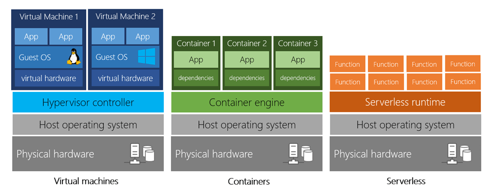
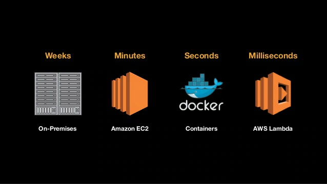
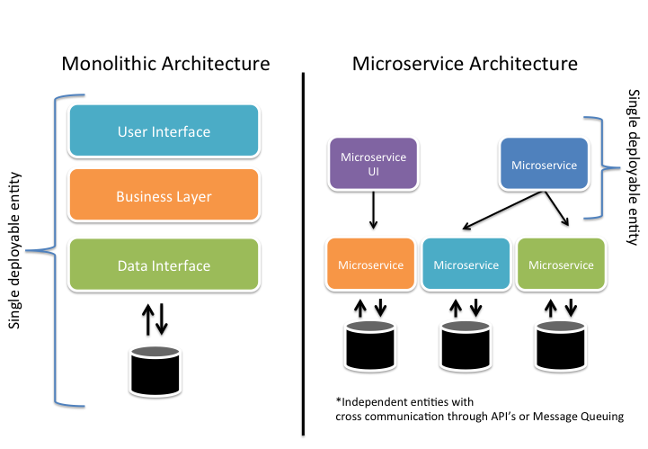
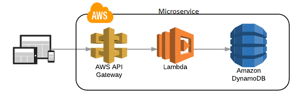
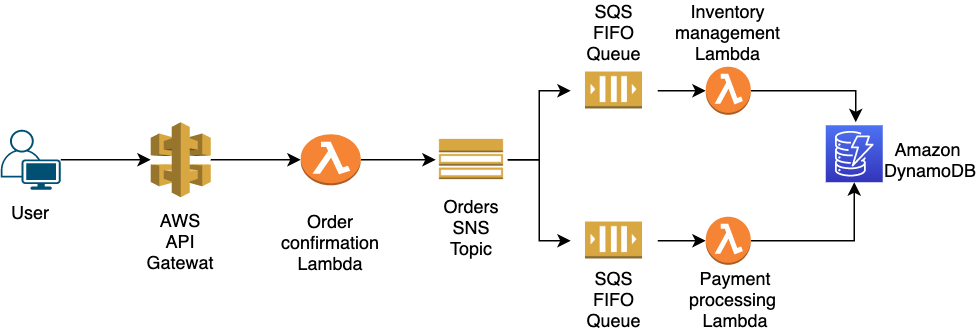

Welcome to serverless course
Page content:
What is serverless computing?
Serverless is a cloud-native development model that allows developers to build and run applications without having to manage servers.
There are still servers in serverless, but they are abstracted away from app development. A cloud provider handles the routine work of provisioning, maintaining, and scaling the server infrastructure. Developers can simply package their code in containers for deployment.
Once deployed, serverless apps respond to demand and automatically scale up and down as needed. Serverless offerings from public cloud providers are usually metered on-demand through an event-driven execution model. As a result, when a serverless function is sitting idle, it doesn’t cost anything.
Serverless key concepts
1. What is Function-as-a-Service (FaaS)?
Function-as-a-Service (FaaS) is an event-driven computing execution model where developers write logic that is deployed in containers fully managed by a platform, then executed on demand.
In contrast to BaaS, FaaS affords a greater degree of control to the developers, who create custom apps rather than relying on a library of prewritten services. Code is deployed into containers that are managed by a cloud provider. Specifically, these containers are:
- Stateless, making data integration simpler.
- Ephemeral, allowing them to be run for a very short time.
- Event-triggered, so they can run automatically when needed.
- Fully managed by a cloud provider, so that you only pay for what is needed, not always-on apps and servers
2. Serverless Architecture vs. Container Architecture
Both serverless and container architectures allow developers to deploy application code by abstracting away the host environment, but there are key differences between them. For example, developers who are using container architecture have to update and maintain each container they deploy, as well as its system settings and dependencies. In contrast, server maintenance in serverless architectures is handled entirely by the cloud provider. Additionally, serverless apps scale automatically, while scaling container architectures requires the use of an orchestration platform like Kubernetes.
Containers give developers control over the underlying operating system and runtime environment, making them suitable for applications that consistently get high traffic or as a first step in a cloud migration. Serverless functions, on the other hand, are better suited for trigger-based events such as payment processing.
3. Benefits of Serverless Architecture
- Cost
- Scalability
- Productivity
Cloud providers charge you on a per-invocation basis, so you’re not paying for unused servers or virtual machines.
Function instances are automatically created or removed in response to traffic variations, within the boundaries of concurrency limits.
Engineers who use serverless can simply deploy their code without having to manage any servers, which helps accelerate delivery cycles and rapidly scale company operations.
4. Challenges of Serverless Architecture
- Loss of Control
- Security
- Performance Impact
- Testing
- Vendor Lock-In
In serverless environments, you lack control over the software stack that your code runs on. If a hardware fault, data center outage, or other issue impacts one of your servers, you’re dependent on a cloud provider to fix it.
A cloud provider may run code from several of their customers on the same server at the same time. If the shared server isn’t configured properly, your application data could be exposed.
Cold starts are common in serverless environments, adding several seconds of latency to code execution when functions are invoked after a period of inactivity.
Developers can run unit tests on function code, but integration tests, which evaluate how frontend and backend components interact, are difficult to perform in a serverless environment.
Large cloud providers like AWS offer several services—such as databases, messaging queues, and APIs—that you can use in harmony to run serverless applications. Although it’s possible to mix and match elements from different vendors, services from a single provider are designed to integrate most seamlessly.
5. Microservices Architecture
Microservices are an architectural pattern that structures an application as a collection of small, loosely coupled services that operate together to achieve a common goal. Because they work independently, they can be added, removed, or upgraded without interfering with other applications.
While there are numerous benefits to microservices architecture, like easier deployment and testing, improved productivity, flexibility, and scalability, they also pose a few disadvantages, as independently run microservices require a seamless method of communication to operate as one larger applicatio
If you would like to deep dive more in Microservices I highly recommend you to watch the this youtube videos!!
6. Event Driven Architecture
An event-driven architecture (EDA) raises and responds to events. An event producer triggers events and these reach interested consumers, as messages, via an event channel. The producer is loosely coupled, or completely decoupled, from event recipients who process the messages asynchronously.

When a dedicated broker sits between the publisher and subscribers, it receives all the publishers’ events and notifies those who have registered interest in receiving them. The broker typically routes events to subscribers as they happen but in an event-streaming pattern, the broker also records events in an event stream. Event consumers access the stream at any time, perhaps reading the most recent message or batch processing a series of them from the last time they checked the stream.
Serverless services
AWS offers technologies for running code, managing data, and integrating applications, all without managing servers. Serverless technologies feature automatic scaling, built-in high availability, and a pay-for-use billing model to increase agility and optimize costs. These technologies also eliminate infrastructure management tasks like capacity provisioning and patching, so you can focus on writing code that serves your customers. Serverless applications start with AWS Lambda, an event-driven compute service natively integrated with over 200 AWS services and software as a service (SaaS) applications.
- Compute
- Integration
- Data Store